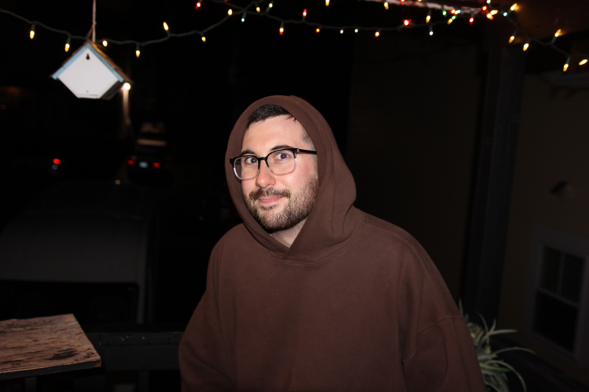

This is the ABOUT page.
I am a Cyber Secruity and Networking student with a specific interest in malware analysis and reverse engineering. I grew up in Millville Massachusetts until I was 18 and joined the Air Force. From there I was primarily stationed in Las Vegas, Nevada. After my 6 year contract I moved back to Massachusetts to change my career and finish my degree in cyber secrurity and network engineering.